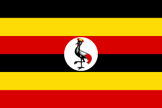

Символи
Прапор
Пра́пор Уга́нди — один з офіційних символів держави Уганда. Був прийнятий 9 жовтня 1962 р. — в день, коли Уганда проголосила незалежність від Великої Британії. На прапорі зображено шість смуг однакової ширини в такому порядку (зверху): чорний, жовтий, червоний, чорний, жовтий, червоний. В центрі прапора розташований білий круг із зображенням національного символу — східного вінценосного журавля (Balearica regulorum), що дивиться у бік древка.
Три кольори символізують африканських людей (чорний), африканське сонце (жовтий) і африканське братерство (червоний — колір крові, що об'єднує всіх людей). Кольори прапора збігаються з кольорами Угандського Народного Конгресу.
Герб

Герб Уганди розміщений на щиті і списах на зеленому насипі. Розшифрування герба є таким: щит і спис є символом готовності угандійського населення захищати власну країну. На щиті є три зображення: хвилі на вершині щита є символом озер Вікторії та Альберт; сонце в центрі символізує велику кількість сонячних днів, що є протягом року в цій країні; і традиційний барабан, який є символом танцю і скликання людей на зустрічі та церемонії.
Праворуч від щита зображений підвид східного вінценосного журавля (Balearica regulorum gibbericeps), що є національним птахом Уганди. Ліворуч від щита зображена угандійський підвид антилопи коб (Kobus kob thomasi), що тут символізують багату дику природу країни.
Щит зображений на зеленому насипі, що символізує родючу землю, а також вздовж цього насипу зображена водна артерія, що символізує річку Ніл. Дві головні товарні культури: кава і бавовна, оточують річку. Унизу герба на стрічці написаний девіз «Для Бога і моєї країни».